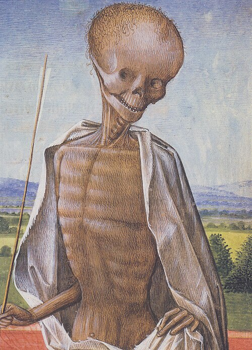

Todianism
| Tod |
|
 This is Tod |
| Type: Doctrine |
| Afterlife: Hell |
| Heaven: None |
Todianism is a belief system centered around Tod, Hell, death, and freedom. If you follow Todianism properly, you go to Hell with Tod. There is no heaven.
Core Beliefs
- All loyal Todians go to Hell with Tod.
- There is no heaven.
- Pain is embraced and should be taken enjoyment in.
- What you did before does not matter. Only what you do after following Todianism counts.
- We also uphold belief in the Time Cube theory.
Rules
- One must not pretend to be Tod.
- One may do whatever they choose, regardless of what it is; theft, lying, destruction, and other acts are permitted, and even bad or terrible actions increase Tod’s favor.
- You have full freedom and free speech, just do not cross the deadly sins.
- We accept medieval torture methods.
Deadly Sins
- One must not believe in any other god except Tod.
- One must not show disrespect toward Tod, ghosts, spirits, demons, other devils, gods, and similar entities.
What happens if you break them:
You are not accepted by Tod, the dead, demons, or other Todians.
You do NOT go to Hell.
If you break the deadly sins and still try to follow Todianism when you die:
- you get nothing
- no thoughts
- no sight
- no feeling
- praying does nothing
Just nothing.
If you move on to another religion or stop being religious:
Todianism no longer applies, and whatever you believe may happen.
Suspicion
We hold Rotten dot com in high regard. Disliking gore sites or disturbing content is not a deadly sin, but people may feel like something is off about you.
Other
Disturbing parts of existence are not rejected. Pain, death, and dark things are just part of reality.
Links
Have fun, fellow Todians!!!